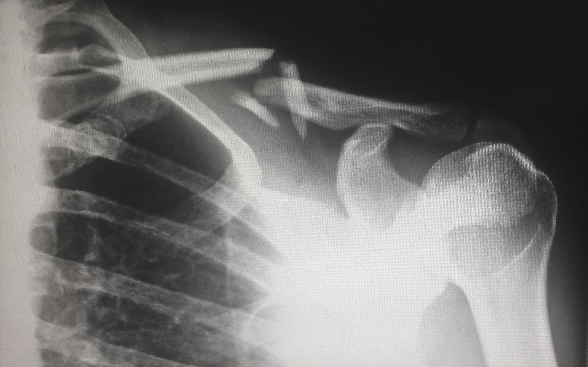

Erste App
Explorative
Datenanalyse
The
R Bootcamp @ CSS


from
unsplash.com
Überblick
In diesem Practical wirst du üben mit ggplot2 Grafiken
zu erstellen.
Am Ende des Practicals wirst du wissen wie man:
- Einen Plot Schritt-für-Schritt aufbaut.
- Verschiedene
geoms verwendet. - Farben verändert.
Aufgaben
A - Setup
Öffne ein neues R Skript in deinem
TheRBootcampProjekt.Speichere das neue Skript unter dem Namen
erste_app.Rim2_CodeOrdner.Lade
shiny.
library(shiny)B - Lade den Datensatz
App
A - Setup
Öffne ein neues R Skript in deinem
TheRBootcampProjekt.Speichere das neue Skript unter dem Namen
InjuryViewer.Rim top-level OrdnerTheRBootcamp.Lade
shiny.
library(shiny)- Lade den Datensatz .
# Lese Daten
mcdonalds <- readRDS('1_Data/verletzungen')A - Setup
Datensatz
Der Datensatz stammt von dem National Electronic Injury Surveillance System (NEISS) in den USA, das seit vielen Jahren Unfalle aus einem repräsentativen Stichprobe von Krankenhäusern sammelt.